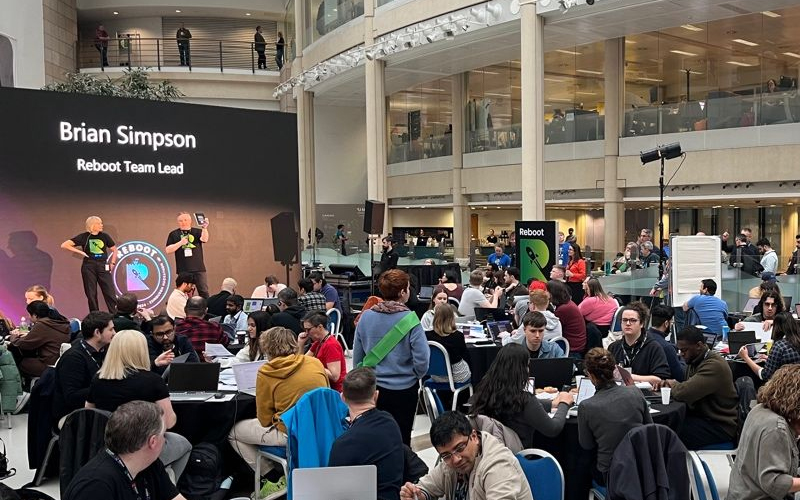

<div class="pages">
  <div data-page="projects" class="page no-toolbar no-navbar">
    <div class="page-content">
      <div class="navbarpages">
        <div class="nav_left_logo"><a href="index.html"></a></div>
        <div class="nav_right_button"><a href="menu.html"></a></div>
      </div>
      <div id="pages_maincontent">
        <h2 class="page_title">What is Reboot?</h2>
        <div class="page_content">
          <p> Launched in 2018,  Reboot Hackathons put the spotlight on technology and are&nbsp;open  to&nbsp;everyone, whether you're&nbsp;an accomplished engineer, curious about  technology or looking for inspiration around your career journey. Reboot gives  colleagues an opportunity to&nbsp;collaborate&nbsp;with each other to generate  new ideas,&nbsp;experiment&nbsp;with new technology and take advantage  of&nbsp;learning&nbsp;opportunities.</p>
          
          </p>
		   <h2 class="page_title">What's new at Reboot London?</h2>
          <p>Today's event  promises to be a key moment in your 2024 learning calendar. Our action-packed &lsquo;Reboot  Experience&rsquo; schedule includes informative tech talks, panel discussions,  hands-on workshops, and the opportunity to find out more about some of the  local platform teams. In between the sessions, interact with a variety of our  suppliers, partners, and areas of the Group at exhibition stalls around the event  - all providing ideas for you to explore and learn. We also have 180  competitors taking part in our Hackathon, competing for a selection of prizes against  two business challenges.</p>
          <p><br>
            You can also hear  from event sponsors <strong>Google</strong>, who are hosting our Hackathon competition,  and <strong>Publicis Sapient</strong>, who have designed the day's fantastic branding.<br>
            <br>
            <strong>Reboot London 2024 has two main themes:</strong><br>
            AI: The House View and Modern Technology Skills </p>
          <br>
         <strong>So, what are you waiting for? </strong> Get ready to immerse yourself in the latest technologies, ignite your creativity, stay curious, learn something new, and most importantly, have some fun.
          </li>
          </p>
        </div>
      </div>
    </div>
  </div>
</div>
